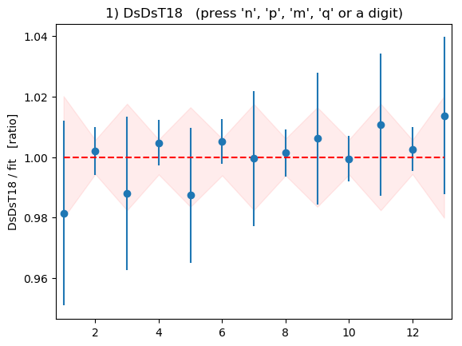

Annotated Example: Transition Form Factor and Mixing¶
Introduction¶
Here we describe a complete Python code that uses corrfitter
to calculate the transition matrix element or form factor from
an  meson to a
meson to a  meson, together with the masses and amplitudes
of these mesons. A very similar code, for (speculative) - mixing,
is described at the end.
meson, together with the masses and amplitudes
of these mesons. A very similar code, for (speculative) - mixing,
is described at the end.
The form factor example combines data from two-point correlators, for the
amplitudes and energies, with data from three-point correlators,
for the transition matrix element. We fit all of the correlators
together, in a single fit, in order to capture correlations between
the various output parameters. The correlations are built into
the output parameters and consequently are reflected in any
arithmetic combination of parameters — no bootstrap is needed to
calculate correlations or their impact on quantities derived
from the fit parameters. The best-fit parameters (in fit.p)
are objects of type gvar.GVar.
Staggered quarks are used in
this simulation, so the has oscillating components as well as
normal components in its correlators.
The source codes (etas-Ds.py, Ds-Ds.py) and data files
(etas-Ds.h5, Ds-Ds.h5) are included with
the corrfitter distribution, in the examples/ directory.
The data are from the HPQCD collaboration.
Code¶
The main method for the form-factor code follows the pattern described
in Basic Fits:
from __future__ import print_function # makes this work for python2 and 3
import collections
import sys
import h5py
import gvar as gv
import numpy as np
import corrfitter as cf
SHOWPLOTS = True
def main():
data = make_data('etas-Ds.h5')
fitter = cf.CorrFitter(models=make_models())
p0 = None
for N in [1, 2, 3, 4]:
print(30 * '=', 'nterm =', N)
prior = make_prior(N)
fit = fitter.lsqfit(data=data, prior=prior, p0=p0)
print(fit.format(pstyle=None if N < 4 else 'v'))
p0 = fit.pmean
print_results(fit, prior, data)
if SHOWPLOTS:
fit.show_plots()
The Monte Carlo data are in a file named 'etas-Ds.h5'. We are doing
four fits, with 1, 2, 3, and 4 terms in the fit function. Each fit starts its
minimization at point p0, which is set equal to the mean values of the
best-fit parameters from the previous fit (p0 = fit.pmean). This reduces
the number of iterations needed for convergence in the N = 4 fit, for
example, from 162 to 45. It also makes multi-term fits more stable.
After the fit, plots of the fit data divided by the fit
are displayed by fit.show_plots(), provided
matplotlib is installed. A plot is made for each correlator, and the
ratios should equal one to within errors. To
move from one plot to the next press “n” on the keyboard; to move to a
previous plot press “p”; to quit the plots press “q”.
We now look at each other major routine in turn.
a) make_data¶
Method make_data('etas-Ds.h5') reads in the Monte Carlo data, averages
it, and formats it for use by corrfitter.CorrFitter:
print('\nAccuracy of key parameters: ' + gv.fmt_chi2(gv.chi2(diff)))
def make_data(datafile):
""" Read data from datafile and average it. """
The data file etas-Ds.h5 is in hdf5 format. It contains four datasets:
>>> for v in dset.values():
... print(v)
<HDF5 dataset "3ptT15": shape (225, 16), type "<f8">
<HDF5 dataset "3ptT16": shape (225, 17), type "<f8">
<HDF5 dataset "Ds": shape (225, 64), type "<f8">
<HDF5 dataset "etas": shape (225, 64), type "<f8">
Each corresponds to Monte Carlo data for a single correlator, which
is packaged as a two-dimensional numpy array whose
first index labels the Monte Carlo sample, and whose second index labels
time. For example,
>>> print(dset['etas'][:, :])
[[ 0.305044 0.0789607 0.0331313 ..., 0.0164646 0.0332153 0.0791385]
[ 0.306573 0.0802435 0.0340765 ..., 0.0170088 0.034013 0.0801528]
[ 0.306194 0.0800234 0.0338007 ..., 0.0168862 0.0337728 0.0799462]
...,
[ 0.305955 0.0797565 0.0335741 ..., 0.0167847 0.0336077 0.0796961]
[ 0.305661 0.0793606 0.0333133 ..., 0.0165365 0.0333934 0.0792943]
[ 0.305365 0.079379 0.033445 ..., 0.0164506 0.0332284 0.0792884]]
is data for a two-point correlator describing the meson. Each
of the 225 lines is a different Monte Carlo sample for the correlator, and
has 64 entries corresponding to t=0,1...63. Note the periodicity
in this data.
Function gv.dataset.avg_data(dset) averages over the Monte Carlo samples
for all the correlators to compute their means and covariance matrix.
We also introduce an SVD cut (see Accurate Fits — SVD Cuts) to account for the fact
that we have only 225 Monte Carlo samples for each piece of data.
The end result is a dictionary whose keys are the keys used to
label the hdf5 datasets: for example,
>>> data = make_data('etas-Ds.h5')
>>> print(data['etas'])
[0.305808(29) 0.079613(24) 0.033539(17) ... 0.079621(24)]
>>> print(data['Ds'])
[0.2307150(73) 0.0446523(32) 0.0089923(15) ... 0.0446527(32)]
>>> print(data['3ptT16'])
[1.4583(21)e-10 3.3639(44)e-10 ... 0.000023155(30)]
Here each entry in data is an array of gvar.GVars representing Monte
Carlo averages for the corresponding correlator at different times. This
is the format needed by corrfitter.CorrFitter. Note that the different correlators
are correlated with each other: for example,
>>> print(gv.evalcorr([data['etas'][0], data['Ds'][0]]))
[[ 1. 0.96432174]
[ 0.96432174 1. ]]
shows a 96% correlation between the t=0 values in the and
correlators.
b) make_models¶
Method make_models() specifies the theoretical models that will be used
to fit the data:
return gv.svd(gv.dataset.avg_data(dset), svdcut=0.0004)
def make_models():
""" Create models to fit data. """
tmin = 5
tp = 64
models = [
cf.Corr2(
datatag='etas', tp=tp, tmin=tmin,
a='etas:a', b='etas:a', dE='etas:dE',
),
cf.Corr2(
datatag='Ds', tp=tp, tmin=tmin,
a=('Ds:a', 'Dso:a'), b=('Ds:a', 'Dso:a'), dE=('Ds:dE', 'Dso:dE'),
),
cf.Corr3(
datatag='3ptT15', T=15, tmin=tmin, a='etas:a', dEa='etas:dE',
b=('Ds:a', 'Dso:a'), dEb=('Ds:dE', 'Dso:dE'),
Vnn='Vnn', Vno='Vno',
),
cf.Corr3(
datatag='3ptT16', T=16, tmin=tmin, a='etas:a', dEa='etas:dE',
b=('Ds:a', 'Dso:a'), dEb=('Ds:dE', 'Dso:dE'),
Vnn='Vnn', Vno='Vno',
)
Four models are specified, one for each correlator to be fit. The first two
are for the and two-point correlators, corresponding to
entries in the data dictionary with keys 'etas' and 'Ds',
respectively.
These are periodic propagators, with period 64 (tp), and we want to
omit the first and last 5 (tmin) time steps in the correlator.
Labels for the fit parameters corresponding to the
sources (and sinks) are specified for each, 'etas:a' and 'Ds:a', as
are labels for the energy differences, 'etas:dE' and 'Ds:dE'. The
propagator also has an oscillating piece because this data comes from
a staggered-quark analysis. Sources/sinks and energy differences are
specified for these as well: 'Dso:a' and 'Dso:dE'.
Finally three-point models are specified for the data corresponding to
data-dictionary keys '3ptT15' and '3ptT16'. These share several
parameters with the two-point correlators, but introduce new parameters
for the transition matrix elements: 'Vnn' connecting normal states, and
'Vno' connecting normal states with oscillating states.
c) make_prior¶
Method make_prior(N) creates a priori estimates for each fit
parameter, to be used as priors in the fitter:
return models
def make_prior(N):
""" Create priors for fit parameters. """
prior = gv.BufferDict()
# etas
metas = gv.gvar('0.4(2)')
prior['log(etas:a)'] = gv.log(gv.gvar(N * ['0.3(3)']))
prior['log(etas:dE)'] = gv.log(gv.gvar(N * ['0.5(5)']))
prior['log(etas:dE)'][0] = gv.log(metas)
# Ds
mDs = gv.gvar('1.2(2)')
prior['log(Ds:a)'] = gv.log(gv.gvar(N * ['0.3(3)']))
prior['log(Ds:dE)'] = gv.log(gv.gvar(N * ['0.5(5)']))
prior['log(Ds:dE)'][0] = gv.log(mDs)
# Ds -- oscillating part
prior['log(Dso:a)'] = gv.log(gv.gvar(N * ['0.1(1)']))
prior['log(Dso:dE)'] = gv.log(gv.gvar(N * ['0.5(5)']))
prior['log(Dso:dE)'][0] = gv.log(mDs + gv.gvar('0.3(3)'))
# V
prior['Vnn'] = gv.gvar(N * [N * ['0(1)']])
Parameter N specifies how many terms are kept in the fit functions. The
priors are stored in a dictionary prior. Each entry is an array, of
length N, with one entry for each term in the fit function.
Each entry is a Gaussian random
variable, an object of type gvar.GVar. Here we use the fact that
gvar.gvar() can make a list of gvar.GVars from a list of strings of the form
'0.1(1)': for example,
>>> print(gv.gvar(['1(2)', '3(2)']))
[1.0(2.0) 3.0(2.0)]
In this particular fit, we can assume that all the sinks/sources
are positive, and we can require that the energy differences be positive. To
force positivity, we use log-normal distributions for these parameters by
defining priors for 'log(etas:a)', 'log(etas:dE)' … rather than
'etas:a', 'etas:dE' … (see Postive Parameters). The a
priori values for these fit parameters are the logarithms of the values for
the parameters themselves: for example, each 'etas:a' has prior 0.3(3),
while the actual fit parameters, log(etas:a), have priors
log(0.3(3)) = -1.2(1.0).
We override the default priors for the ground-state energies in each case.
This is not unusual since dE[0], unlike the other dEs, is an energy,
not an energy difference. For the oscillating state, we require
that its mass be 0.3(3) larger than the mass. One could put
more precise information into the priors if that made sense given the goals
of the simulation. For example, if the main objective is a value for Vnn,
one might include fairly exact information about the and
masses in the prior, using results from experiment or from
earlier simulations. This would make no sense, however, if the goal is to
verify that simulations gives correct masses.
Note, finally, that a statement like
prior['Vnn'] = gv.gvar(N * [N* ['0(1)']]) # correct
is not the same as
prior['Vnn'] = N * [N * [gv.gvar('0(1)')]] # wrong
The former creates N ** 2 independent gvar.GVars, with one for each element
of Vnn; it is one of the most succinct ways of creating a large number of
gvar.GVars. The latter creates only a single gvar.GVar and uses it repeatedly for
every element Vnn, thereby forcing every element of Vnn to be equal
to every other element when fitting (since the difference between any two of
their priors is 0±0); it is almost certainly not what is desired.
Usually one wants to create the array of strings first, and then convert it to
gvar.GVars using gvar.gvar().
d) print_results¶
Method print_results(fit, prior, data) reports on the best-fit values
for the fit parameters from the last fit:
return prior
def print_results(fit, prior, data):
""" Report best-fit results. """
print('Fit results:')
p = fit.p # best-fit parameters
# etas
E_etas = np.cumsum(p['etas:dE'])
a_etas = p['etas:a']
print(' Eetas:', E_etas[:3])
print(' aetas:', a_etas[:3])
# Ds
E_Ds = np.cumsum(p['Ds:dE'])
a_Ds = p['Ds:a']
print('\n EDs:', E_Ds[:3])
print( ' aDs:', a_Ds[:3])
# Dso -- oscillating piece
E_Dso = np.cumsum(p['Dso:dE'])
a_Dso = p['Dso:a']
print('\n EDso:', E_Dso[:3])
print( ' aDso:', a_Dso[:3])
# V
Vnn = p['Vnn']
Vno = p['Vno']
print('\n etas->V->Ds =', Vnn[0, 0])
print(' etas->V->Dso =', Vno[0, 0])
# error budget
outputs = collections.OrderedDict()
outputs['metas'] = E_etas[0]
outputs['mDs'] = E_Ds[0]
outputs['mDso-mDs'] = E_Dso[0] - E_Ds[0]
outputs['Vnn'] = Vnn[0, 0]
outputs['Vno'] = Vno[0, 0]
inputs = collections.OrderedDict()
inputs['statistics'] = data # statistical errors in data
inputs.update(prior) # all entries in prior
print('\n' + gv.fmt_values(outputs))
The best-fit parameter values are stored in dictionary p=fit.p,
as are the exponentials of the log-normal parameters.
We also turn energy differences into energies using numpy’s cummulative
sum function numpy.cumsum(). The final output is:
Fit results:
Eetas: [0.41616(12) 1.006(79) 1.51(38)]
aetas: [0.21832(17) 0.174(61) 0.33(19)]
EDs: [1.20164(17) 1.697(31) 2.20(27)]
aDs: [0.21464(23) 0.266(39) 0.45(20)]
EDso: [1.449(11) 1.72(11) 2.23(50)]
aDso: [0.0683(60) 0.090(32) 0.104(95)]
etas->V->Ds = 0.7668(12)
etas->V->Dso = -0.766(56)
Finally we create an error budget for the
and masses, for the mass difference between the and its
opposite-parity partner, and for the ground-state transition amplitudes
Vnn and Vno. The quantities of interest are specified in dictionary
outputs. For the error budget, we need another dictionary, inputs,
specifying various inputs to the calculation, here the Monte Carlo data and the
priors. Each of these inputs
contributes to the errors in the final results, as detailed in the
error budget:
Values:
metas: 0.41616(12)
mDs: 1.20164(17)
mDso-mDs: 0.247(11)
Vnn: 0.7668(12)
Vno: -0.766(56)
Partial % Errors:
metas mDs mDso-mDs Vnn Vno
---------------------------------------------------------------
statistics: 0.03 0.01 3.45 0.13 5.19
log(etas:a): 0.00 0.00 0.10 0.01 0.13
log(etas:dE): 0.00 0.00 0.10 0.01 0.08
log(Ds:a): 0.00 0.00 0.45 0.02 0.30
log(Ds:dE): 0.00 0.00 0.50 0.03 0.33
log(Dso:a): 0.00 0.00 0.92 0.01 3.12
log(Dso:dE): 0.00 0.00 1.14 0.01 3.45
Vnn: 0.00 0.00 0.92 0.06 0.68
Vno: 0.00 0.00 2.48 0.02 1.90
---------------------------------------------------------------
total: 0.03 0.01 4.64 0.15 7.27
The error budget shows, for example, that the largest sources of uncertainty in every quantity are the statistical errors in the input data.
Results¶
The output from running the code is as follows:
============================== nterm = 1
Least Square Fit:
chi2/dof [dof] = 3.2e+03 [69] Q = 0 logGBF = -1.0714e+05
Settings:
svdcut/n = 1e-12/0 tol = (1e-08*,1e-10,1e-10) (itns/time = 33/0.1)
============================== nterm = 2
Least Square Fit:
chi2/dof [dof] = 1.1 [69] Q = 0.28 logGBF = 1560.2
Settings:
svdcut/n = 1e-12/0 tol = (1e-08*,1e-10,1e-10) (itns/time = 25/0.1)
============================== nterm = 3
Least Square Fit:
chi2/dof [dof] = 0.37 [69] Q = 1 logGBF = 1577.8
Settings:
svdcut/n = 1e-12/0 tol = (1e-08*,1e-10,1e-10) (itns/time = 28/0.1)
============================== nterm = 4
Least Square Fit:
chi2/dof [dof] = 0.37 [69] Q = 1 logGBF = 1578.2
Parameters:
log(etas:a) 0 -1.52180 (76) [ -1.2 (1.0) ]
1 -1.75 (35) [ -1.2 (1.0) ]
2 -1.10 (58) [ -1.2 (1.0) ]
3 -1.19 (97) [ -1.2 (1.0) ]
log(etas:dE) 0 -0.87668 (29) [ -0.92 (50) ]
1 -0.53 (13) [ -0.7 (1.0) ]
2 -0.69 (64) [ -0.7 (1.0) ]
3 -0.72 (98) [ -0.7 (1.0) ]
log(Ds:a) 0 -1.5388 (11) [ -1.2 (1.0) ]
1 -1.32 (15) [ -1.2 (1.0) ]
2 -0.81 (45) [ -1.2 (1.0) ]
3 -1.13 (99) [ -1.2 (1.0) ]
log(Ds:dE) 0 0.18368 (15) [ 0.18 (17) ]
1 -0.703 (63) [ -0.7 (1.0) ]
2 -0.68 (49) [ -0.7 (1.0) ]
3 -0.76 (99) [ -0.7 (1.0) ]
log(Dso:a) 0 -2.683 (88) [ -2.3 (1.0) ]
1 -2.41 (35) [ -2.3 (1.0) ]
2 -2.27 (92) [ -2.3 (1.0) ]
3 -2.3 (1.0) [ -2.3 (1.0) ]
log(Dso:dE) 0 0.3707 (79) [ 0.41 (24) ]
1 -1.29 (40) [ -0.7 (1.0) ]
2 -0.68 (89) [ -0.7 (1.0) ]
3 -0.7 (1.0) [ -0.7 (1.0) ]
Vnn 0,0 0.7668 (12) [ 0.0 (1.0) ]
0,1 -0.468 (51) [ 0.0 (1.0) ]
0,2 0.18 (48) [ 0.0 (1.0) ]
0,3 0.02 (99) [ 0.0 (1.0) ]
1,0 0.084 (61) [ 0.0 (1.0) ]
1,1 0.18 (89) [ 0.0 (1.0) ]
1,2 0.02 (1.00) [ 0.0 (1.0) ]
1,3 0.0009 (1.0000) [ 0.0 (1.0) ]
2,0 -0.25 (38) [ 0.0 (1.0) ]
2,1 0.01 (1.00) [ 0.0 (1.0) ]
2,2 0.0005 (1.0000) [ 0.0 (1.0) ]
2,3 2e-05 +- 1 [ 0.0 (1.0) ]
3,0 -0.04 (99) [ 0.0 (1.0) ]
3,1 0.001 (1.000) [ 0.0 (1.0) ]
3,2 2e-05 +- 1 [ 0.0 (1.0) ]
3,3 3e-07 +- 1 [ 0.0 (1.0) ]
Vno 0,0 -0.766 (56) [ 0.0 (1.0) ]
0,1 0.37 (28) [ 0.0 (1.0) ]
0,2 -0.02 (95) [ 0.0 (1.0) ]
0,3 8e-06 +- 1 [ 0.0 (1.0) ]
1,0 0.07 (48) [ 0.0 (1.0) ]
1,1 0.06 (98) [ 0.0 (1.0) ]
1,2 0.0008 (0.9999) [ 0.0 (1.0) ]
1,3 -1e-05 +- 1 [ 0.0 (1.0) ]
2,0 -0.06 (97) [ 0.0 (1.0) ]
2,1 0.002 (1.000) [ 0.0 (1.0) ]
2,2 0.0001 (1.0000) [ 0.0 (1.0) ]
2,3 1e-06 +- 1 [ 0.0 (1.0) ]
3,0 -0.01 (1.00) [ 0.0 (1.0) ]
3,1 -0.0004 (1.0000) [ 0.0 (1.0) ]
3,2 4e-06 +- 1 [ 0.0 (1.0) ]
3,3 9e-08 +- 1 [ 0.0 (1.0) ]
--------------------------------------------------------
etas:a 0 0.21832 (17) [ 0.30 (30) ]
1 0.174 (61) [ 0.30 (30) ]
2 0.33 (19) [ 0.30 (30) ]
3 0.31 (30) [ 0.30 (30) ]
etas:dE 0 0.41616 (12) [ 0.40 (20) ]
1 0.590 (79) [ 0.50 (50) ]
2 0.50 (32) [ 0.50 (50) ]
3 0.49 (48) [ 0.50 (50) ]
Ds:a 0 0.21464 (23) [ 0.30 (30) ]
1 0.266 (39) [ 0.30 (30) ]
2 0.45 (20) [ 0.30 (30) ]
3 0.32 (32) [ 0.30 (30) ]
Ds:dE 0 1.20164 (17) [ 1.20 (20) ]
1 0.495 (31) [ 0.50 (50) ]
2 0.50 (25) [ 0.50 (50) ]
3 0.47 (46) [ 0.50 (50) ]
Dso:a 0 0.0683 (60) [ 0.10 (10) ]
1 0.090 (32) [ 0.10 (10) ]
2 0.104 (95) [ 0.10 (10) ]
3 0.10 (10) [ 0.10 (10) ]
Dso:dE 0 1.449 (11) [ 1.50 (36) ]
1 0.27 (11) [ 0.50 (50) ]
2 0.51 (45) [ 0.50 (50) ]
3 0.49 (49) [ 0.50 (50) ]
Settings:
svdcut/n = 1e-12/0 tol = (1e-08*,1e-10,1e-10) (itns/time = 23/0.1)
Fit results:
Eetas: [0.41616(12) 1.006(79) 1.51(38)]
aetas: [0.21832(17) 0.174(61) 0.33(19)]
EDs: [1.20164(17) 1.697(31) 2.20(27)]
aDs: [0.21464(23) 0.266(39) 0.45(20)]
EDso: [1.449(11) 1.72(11) 2.23(50)]
aDso: [0.0683(60) 0.090(32) 0.104(95)]
etas->V->Ds = 0.7668(12)
etas->V->Dso = -0.766(56)
Values:
metas: 0.41616(12)
mDs: 1.20164(17)
mDso-mDs: 0.247(11)
Vnn: 0.7668(12)
Vno: -0.766(56)
Partial % Errors:
metas mDs mDso-mDs Vnn Vno
---------------------------------------------------------------
statistics: 0.03 0.01 3.45 0.13 5.19
log(etas:a): 0.00 0.00 0.10 0.01 0.13
log(etas:dE): 0.00 0.00 0.10 0.01 0.08
log(Ds:a): 0.00 0.00 0.45 0.02 0.30
log(Ds:dE): 0.00 0.00 0.50 0.03 0.33
log(Dso:a): 0.00 0.00 0.92 0.01 3.12
log(Dso:dE): 0.00 0.00 1.14 0.01 3.45
Vnn: 0.00 0.00 0.92 0.06 0.68
Vno: 0.00 0.00 2.48 0.02 1.90
---------------------------------------------------------------
total: 0.03 0.01 4.64 0.15 7.27
Note:
This is a relatively simple fit, taking only a second or so on a laptop.
Fits with only one or two terms in the fit function are poor, with
chi2/dofs that are significantly larger than one.Fits with three terms work well, and adding futher terms has almost no impact. The chi-squared does not improve and parameters for the added terms differ little from their prior values (since the data are not sufficiently accurate to add new information).
The quality of the fit is confirmed by the fit plots displayed at the end (press the ‘n’ and ‘p’ keys to cycle through the various plots, and the ‘q’ key to quit the plot). The plot for the
correlator,
for example, shows correlator data divided by fit result as a
function of t:
The points with error bars are the correlator data points; the fit result is 1.0 in this plot, of course, and the shaded band shows the uncertainty in the fit function evaluated with the best-fit parameters. Fit and data agree to within errors. Note how the fit-function errors (the shaded band) track the data errors. In general the fit function is at least as accurate as the data. It can be much more accurate, for example, when the data errors grow rapidly with
t.In many applications precision can be improved by factors of 2—3 or more by using multiple sources and sinks for the correlators. The code here is easily generalized to handle such a situation: each
corrfitter.Corr2andcorrfitter.Corr3inmake_models()is replicated with various different combinations of sources and sinks (one entry for each combination).
Variation: Marginalization¶
Marginalization (see Marginalization) can speed up fits like
this one. To use an 8-term fit function, while tuning parameters for only
N terms, we change only four lines in the main program:
def main():
data = make_data('etas-Ds.h5')
fitter = CorrFitter(models=make_models())
p0 = None
for N in [1, 2]: # 1
print(30 * '=', 'nterm =', N)
prior = make_prior(8) # 2
fit = fitter.lsqfit(data=data, prior=prior, p0=p0, nterm=(N, N)) # 3
print(fit) # 4
p0 = fit.pmean
print_results(fit, prior, data)
if DISPLAYPLOTS:
fit.show_plots()
The first modification (#1)
limits the
fits to N=1,2, because that is all that will be needed to get good
values for the leading term.
The second modification (#2) sets the prior to eight terms, no matter what value
N has. The third (#3) tells fitter.lsqfit to fit parameters from
only the first N terms in the fit function; parts of the prior that are
not being fit are incorporated (marginalized) into the fit data.
The last modification (#4) changes what is printed out.
The output
shows that
results for the leading term have converged by N=2 (and even N=1 is
pretty good):
============================== nterm = 1
Least Square Fit:
chi2/dof [dof] = 0.47 [69] Q = 1 logGBF = 1569.1
Parameters:
log(etas:a) 0 -1.52158 (82) [ -1.2 (1.0) ]
log(etas:dE) 0 -0.87665 (30) [ -0.92 (50) ]
log(Ds:a) 0 -1.5387 (11) [ -1.2 (1.0) ]
log(Ds:dE) 0 0.18369 (15) [ 0.18 (17) ]
log(Dso:a) 0 -2.623 (33) [ -2.3 (1.0) ]
log(Dso:dE) 0 0.3741 (41) [ 0.41 (24) ]
Vnn 0,0 0.7651 (12) [ 0.0 (1.0) ]
Vno 0,0 -0.708 (14) [ 0.0 (1.0) ]
---------------------------------------------------
etas:a 0 0.21837 (18) [ 0.30 (30) ]
etas:dE 0 0.41617 (12) [ 0.40 (20) ]
Ds:a 0 0.21466 (24) [ 0.30 (30) ]
Ds:dE 0 1.20165 (18) [ 1.20 (20) ]
Dso:a 0 0.0726 (24) [ 0.10 (10) ]
Dso:dE 0 1.4537 (59) [ 1.50 (36) ]
Settings:
svdcut/n = 1e-12/0 tol = (1e-08*,1e-10,1e-10) (itns/time = 8/0.0)
============================== nterm = 2
Least Square Fit:
chi2/dof [dof] = 0.37 [69] Q = 1 logGBF = 1578.5
Parameters:
log(etas:a) 0 -1.52176 (76) [ -1.2 (1.0) ]
1 -1.62 (54) [ -1.2 (1.0) ]
log(etas:dE) 0 -0.87667 (29) [ -0.92 (50) ]
1 -0.49 (17) [ -0.7 (1.0) ]
log(Ds:a) 0 -1.5389 (10) [ -1.2 (1.0) ]
1 -1.35 (10) [ -1.2 (1.0) ]
log(Ds:dE) 0 0.18368 (14) [ 0.18 (17) ]
1 -0.713 (48) [ -0.7 (1.0) ]
log(Dso:a) 0 -2.680 (77) [ -2.3 (1.0) ]
1 -2.36 (16) [ -2.3 (1.0) ]
log(Dso:dE) 0 0.3709 (70) [ 0.41 (24) ]
1 -1.24 (27) [ -0.7 (1.0) ]
Vnn 0,0 0.7668 (11) [ 0.0 (1.0) ]
0,1 -0.459 (48) [ 0.0 (1.0) ]
1,0 0.102 (77) [ 0.0 (1.0) ]
1,1 0.18 (91) [ 0.0 (1.0) ]
Vno 0,0 -0.761 (38) [ 0.0 (1.0) ]
0,1 0.37 (20) [ 0.0 (1.0) ]
1,0 0.04 (47) [ 0.0 (1.0) ]
1,1 0.07 (99) [ 0.0 (1.0) ]
---------------------------------------------------
etas:a 0 0.21833 (16) [ 0.30 (30) ]
1 0.20 (11) [ 0.30 (30) ]
etas:dE 0 0.41616 (12) [ 0.40 (20) ]
1 0.61 (10) [ 0.50 (50) ]
Ds:a 0 0.21463 (22) [ 0.30 (30) ]
1 0.260 (26) [ 0.30 (30) ]
Ds:dE 0 1.20163 (17) [ 1.20 (20) ]
1 0.490 (23) [ 0.50 (50) ]
Dso:a 0 0.0686 (53) [ 0.10 (10) ]
1 0.094 (15) [ 0.10 (10) ]
Dso:dE 0 1.449 (10) [ 1.50 (36) ]
1 0.289 (77) [ 0.50 (50) ]
Settings:
svdcut/n = 1e-12/0 tol = (1e-08*,1e-10,1e-10) (itns/time = 13/0.1)
Fit results:
Eetas: [0.41616(12) 1.03(10)]
aetas: [0.21833(16) 0.20(11)]
EDs: [1.20163(17) 1.692(24)]
aDs: [0.21463(22) 0.260(26)]
EDso: [1.449(10) 1.738(82)]
aDso: [0.0686(53) 0.094(15)]
etas->V->Ds = 0.7668(11)
etas->V->Dso = -0.761(38)
Values:
metas: 0.41616(12)
mDs: 1.20163(17)
mDso-mDs: 0.247(10)
Vnn: 0.7668(11)
Vno: -0.761(38)
Partial % Errors:
metas mDs mDso-mDs Vnn Vno
---------------------------------------------------------------
statistics: 0.03 0.01 3.41 0.12 4.45
log(etas:a): 0.00 0.00 0.08 0.01 0.18
log(etas:dE): 0.00 0.00 0.11 0.01 0.09
log(Ds:a): 0.00 0.00 0.18 0.01 0.68
log(Ds:dE): 0.00 0.00 0.30 0.03 0.61
log(Dso:a): 0.00 0.00 0.35 0.00 1.09
log(Dso:dE): 0.00 0.00 0.60 0.01 1.44
Vnn: 0.00 0.00 1.06 0.06 0.13
Vno: 0.00 0.00 1.84 0.02 0.91
---------------------------------------------------------------
total: 0.03 0.01 4.10 0.14 4.98
Variation: Chained Fit¶
Chained fits are used if fitter.lsqfit(...)
is replaced by fitter.chained_lsqfit(...) in main(). Following
the advice at the end of Chained Fits, we combine chained
fits with marginalization. Three parts of our original code need
modifications:
def main():
data = make_data('etas-Ds.h5')
models = make_models() # 1
models = [models[0], models[1], dict(nterm=(1,0)), (models[2], models[3])] # 1
fitter = CorrFitter(models=models) # 1
p0 = None
for N in [1, 2, 3, 4]:
print(30 * '=', 'nterm =', N)
prior = make_prior(N)
fit = fitter.chained_lsqfit(data=data, prior=prior, p0=p0) # 2
print(fit.formatall(pstyle=None if N < 4 else 'v')) # 3
p0 = fit.pmean
print_results(fit, prior, data)
if DISPLAYPLOTS:
fit.show_plots()
The first modification (#1) replaces the original list of models with
a structured list that instructs the (chained) fitter sequentially to:
- fit the
etas2-point correlator described inmodels[0];- fit the
Ds2-point correlator described inmodels[1];- reset fit parameter
nterm=(1,0), causing the fitter to marginalize all states other than the (non-oscillating) ground state in subsequent fits;- fit simultaneously the two 3-point correlators described in
(models[2],models[3]).
The second modification (#2) replaces lsqfit by chained_lsqfit.
The third modification (#3) changes what is listed by the code: results
from all the fits in the chain are displayed.
The output for N=4 terms is substantially shorter than for our
original code:
============================== nterm = 4
========== etas
Least Square Fit:
chi2/dof [dof] = 0.28 [28] Q = 1 logGBF = 469.79
Parameters:
log(etas:a) 0 -1.52157 (79) [ -1.2 (1.0) ]
1 -1.70 (35) [ -1.2 (1.0) ]
2 -1.10 (62) [ -1.2 (1.0) ]
3 -1.19 (98) [ -1.2 (1.0) ]
log(etas:dE) 0 -0.87660 (30) [ -0.92 (50) ]
1 -0.50 (13) [ -0.7 (1.0) ]
2 -0.67 (70) [ -0.7 (1.0) ]
3 -0.71 (99) [ -0.7 (1.0) ]
---------------------------------------------------
etas:a 0 0.21837 (17) [ 0.30 (30) ]
1 0.183 (64) [ 0.30 (30) ]
2 0.33 (20) [ 0.30 (30) ]
3 0.30 (30) [ 0.30 (30) ]
etas:dE 0 0.41620 (12) [ 0.40 (20) ]
1 0.605 (80) [ 0.50 (50) ]
2 0.51 (36) [ 0.50 (50) ]
3 0.49 (48) [ 0.50 (50) ]
Settings:
svdcut/n = 1e-12/0 tol = (1e-08*,1e-10,1e-10) (itns/time = 12/0.0)
========== Ds
Least Square Fit:
chi2/dof [dof] = 0.56 [28] Q = 0.97 logGBF = 846.08
Parameters:
log(Ds:a) 0 -1.5388 (13) [ -1.2 (1.0) ]
1 -1.34 (21) [ -1.2 (1.0) ]
2 -0.83 (53) [ -1.2 (1.0) ]
3 -1.14 (99) [ -1.2 (1.0) ]
log(Ds:dE) 0 0.18368 (16) [ 0.18 (17) ]
1 -0.708 (91) [ -0.7 (1.0) ]
2 -0.71 (63) [ -0.7 (1.0) ]
3 -0.75 (99) [ -0.7 (1.0) ]
log(Dso:a) 0 -2.56 (10) [ -2.3 (1.0) ]
1 -2.15 (55) [ -2.3 (1.0) ]
2 -2.29 (99) [ -2.3 (1.0) ]
3 -2.3 (1.0) [ -2.3 (1.0) ]
log(Dso:dE) 0 0.382 (11) [ 0.41 (24) ]
1 -0.84 (58) [ -0.7 (1.0) ]
2 -0.71 (98) [ -0.7 (1.0) ]
3 -0.7 (1.0) [ -0.7 (1.0) ]
--------------------------------------------------
Ds:a 0 0.21465 (27) [ 0.30 (30) ]
1 0.263 (55) [ 0.30 (30) ]
2 0.44 (23) [ 0.30 (30) ]
3 0.32 (31) [ 0.30 (30) ]
Ds:dE 0 1.20163 (19) [ 1.20 (20) ]
1 0.492 (45) [ 0.50 (50) ]
2 0.49 (31) [ 0.50 (50) ]
3 0.47 (47) [ 0.50 (50) ]
Dso:a 0 0.0772 (77) [ 0.10 (10) ]
1 0.116 (64) [ 0.10 (10) ]
2 0.10 (10) [ 0.10 (10) ]
3 0.10 (10) [ 0.10 (10) ]
Dso:dE 0 1.466 (16) [ 1.50 (36) ]
1 0.43 (25) [ 0.50 (50) ]
2 0.49 (48) [ 0.50 (50) ]
3 0.50 (50) [ 0.50 (50) ]
Settings:
svdcut/n = 1e-12/0 tol = (1e-08*,1e-10,1e-10) (itns/time = 18/0.0)
========== (3ptT15,3ptT16)
Least Square Fit:
chi2/dof [dof] = 0.73 [13] Q = 0.73 logGBF = 260.33
Parameters:
log(etas:a) 0 -1.52133 (78) [ -1.52157 (79) ]
log(etas:dE) 0 -0.87653 (29) [ -0.87660 (30) ]
log(Ds:a) 0 -1.5390 (12) [ -1.5388 (13) ]
log(Ds:dE) 0 0.18367 (16) [ 0.18368 (16) ]
Vnn 0,0 0.76634 (98) [ 0.0 (1.0) ]
------------------------------------------------------
etas:a 0 0.21842 (17) [ 0.21837 (17) ]
etas:dE 0 0.41622 (12) [ 0.41620 (12) ]
Ds:a 0 0.21459 (27) [ 0.21465 (27) ]
Ds:dE 0 1.20162 (19) [ 1.20163 (19) ]
Settings:
svdcut/n = 1e-12/0 tol = (1e-08*,1e-10,1e-10) (itns/time = 3/0.0)
Fit results:
Eetas: [0.41622(12) 1.022(80) 1.53(42)]
aetas: [0.21842(17) 0.183(64) 0.33(20)]
EDs: [1.20162(19) 1.694(45) 2.19(35)]
aDs: [0.21459(27) 0.263(55) 0.44(23)]
EDso: [1.466(16) 1.90(26) 2.39(56)]
aDso: [0.0772(77) 0.116(64) 0.10(10)]
etas->V->Ds = 0.76634(98)
etas->V->Dso = 0.0(1.0)
Values:
metas: 0.41622(12)
mDs: 1.20162(19)
mDso-mDs: 0.264(16)
Vnn: 0.76634(98)
Vno: 0.0(1.0)
Partial % Errors:
metas mDs mDso-mDs Vnn Vno
---------------------------------------------------------------
statistics: 0.03 0.02 4.52 0.12 nan
log(etas:a): 0.00 0.00 0.00 0.00 nan
log(etas:dE): 0.00 0.00 0.00 0.00 nan
log(Ds:a): 0.00 0.00 0.33 0.00 nan
log(Ds:dE): 0.00 0.00 0.20 0.00 nan
log(Dso:a): 0.00 0.00 2.35 0.00 nan
log(Dso:dE): 0.00 0.00 2.92 0.00 nan
Vnn: 0.00 0.00 0.01 0.04 nan
Vno: 0.00 0.00 0.00 0.02 inf
---------------------------------------------------------------
total: 0.03 0.02 5.88 0.13 inf
Note:
- Fit results are listed from each step in the chain: first just the
etas2-point correlator, then theDs2-point correlator, and finally a combined fit of both 3-point correlators.- The last fit (3-point correlators) has only five fit parameters because all of the other parameters have been folded into the data using marginalization. The priors for the energies and amplitudes are the outputs from the preceding 2-point fits. The results for these are changed only slightly by the last fit.
- One might try less marginalization (e.g.,
nterm=(1,1)) to check that results are stable.- Final results are very similar to before except that there is no information about
Vnosince it was marginalized out of the fit. The value quoted forVnois just that specified in the prior.
Chained fits are particularly useful for very large data sets (much larger than this one). Also marginalizing extraneous variables in the 3-point fits can make fitting more robust (because it is simpler).
Test the Analysis¶
We can test our analysis by adding
test_fit(fitter=fitter, p_exact=fit.pmean, prior=prior, datafile='etas-Ds.h5')
to the main method, where:
def test_fit(fitter, p_exact, prior, datafile):
""" Test the fit with simulated data """
gv.ranseed(9876)
print('\nRandom seed:', gv.ranseed.seed)
dataset = h5py.File(datafile)
for spdata in fitter.simulated_pdata_iter(
n=2, dataset=dataset, p_exact=p_exact
):
print('\n============================== simulation')
sfit = fitter.lsqfit(pdata=spdata, prior=prior, p0=p_exact)
print(sfit.format(pstyle=None))
# check chi**2 for key parameters
diff = {}
for k in ['etas:a', 'etas:dE', 'Ds:a', 'Ds:dE', 'Vnn']:
p_k = sfit.p[k].flat[0]
pex_k = p_exact[k].flat[0]
print(
'{:>10}: fit = {:<11} exact = {:<9.5} diff = {}'
.format(k, p_k, pex_k, p_k - pex_k)
)
diff[k] = p_k - pex_k
print('\nAccuracy of key parameters: ' + gv.fmt_chi2(gv.chi2(diff)))
This code does n=2 simulations of the full fit, using the means
fit.pmean from the last fit as p_exact.
The code compares fit results with p_exact in each case,
and computes the chi-squared of the difference between the leading
parameters and p_exact. The output is:
============================== simulation
Least Square Fit:
chi2/dof [dof] = 0.7 [69] Q = 0.97 logGBF = 1604.5
Settings:
svdcut/n = 1e-12/0 tol = (1e-08*,1e-10,1e-10) (itns/time = 57/0.2)
etas:a: fit = 0.21823(15) exact = 0.21832 diff = -0.00009(15)
etas:dE: fit = 0.41613(11) exact = 0.41616 diff = -0.00003(11)
Ds:a: fit = 0.21460(22) exact = 0.21464 diff = -0.00004(22)
Ds:dE: fit = 1.20164(16) exact = 1.2016 diff = 6(164)e-06
Vnn: fit = 0.7667(11) exact = 0.76684 diff = -0.0001(11)
Accuracy of key parameters: chi2/dof = 0.22 [5] Q = 0.95
============================== simulation
Least Square Fit:
chi2/dof [dof] = 1 [69] Q = 0.41 logGBF = 1593.9
Settings:
svdcut/n = 1e-12/0 tol = (1e-08*,1e-10,1e-10) (itns/time = 128/0.5)
etas:a: fit = 0.21832(15) exact = 0.21832 diff = -4(148)e-06
etas:dE: fit = 0.41622(11) exact = 0.41616 diff = 0.00006(11)
Ds:a: fit = 0.21451(18) exact = 0.21464 diff = -0.00013(18)
Ds:dE: fit = 1.20151(15) exact = 1.2016 diff = -0.00012(15)
Vnn: fit = 0.76695(74) exact = 0.76684 diff = 0.00011(74)
Accuracy of key parameters: chi2/dof = 0.9 [5] Q = 0.48
This shows that the fit is working well.
Other options are easily checked. For example,
only one line need be changed in test_fit in order to test
a marginalized fit:
sfit = fitter.lsqfit(pdata=spdata, prior=prior, p0=p_exact, nterm=(2,2))
Running this code gives:
============================== simulation
Least Square Fit:
chi2/dof [dof] = 0.75 [69] Q = 0.94 logGBF = 1603.1
Settings:
svdcut/n = 1e-12/0 tol = (1e-08*,1e-10,1e-10) (itns/time = 15/0.1)
etas:a: fit = 0.21822(15) exact = 0.21833 diff = -0.00011(15)
etas:dE: fit = 0.41612(11) exact = 0.41616 diff = -0.00005(11)
Ds:a: fit = 0.21457(19) exact = 0.21463 diff = -0.00005(19)
Ds:dE: fit = 1.20161(15) exact = 1.2016 diff = -0.00002(15)
Vnn: fit = 0.76637(82) exact = 0.76681 diff = -0.00044(82)
Accuracy of key parameters: chi2/dof = 0.25 [5] Q = 0.94
============================== simulation
Least Square Fit:
chi2/dof [dof] = 1 [69] Q = 0.42 logGBF = 1593.8
Settings:
svdcut/n = 1e-12/0 tol = (1e-08*,1e-10,1e-10) (itns/time = 22/0.1)
etas:a: fit = 0.21831(15) exact = 0.21833 diff = -0.00001(15)
etas:dE: fit = 0.41622(11) exact = 0.41616 diff = 0.00005(11)
Ds:a: fit = 0.21450(19) exact = 0.21463 diff = -0.00013(19)
Ds:dE: fit = 1.20151(16) exact = 1.2016 diff = -0.00012(16)
Vnn: fit = 0.76697(78) exact = 0.76681 diff = 0.00016(78)
Accuracy of key parameters: chi2/dof = 0.93 [5] Q = 0.46
This is also fine and confirms that nterm=(2,2) marginalized fits
are a useful, faster substitute for full fits in this case.
Mixing¶
Code to analyze - mixing is very similar to the code above for
a transition form factor. The main() and make_data() functions are
identical, except that here data are read from file 'Ds-Ds.h5' and
the appropriate SVD cut is svdcut=0.014 (see Accurate Fits — SVD Cuts).
We need models for the two-point correlator, and for two three-point
correlators describing the to transition:
def make_models():
""" Create models to fit data. """
tmin = 3
tp = 64
models = [
cf.Corr2(
datatag='Ds', tp=tp, tmin=tmin,
a=('a', 'ao'), b=('a', 'ao'), dE=('dE', 'dEo'), s=(1., -1.),
),
cf.Corr3(
datatag='DsDsT18', T=18, tmin=tmin,
a=('a', 'ao'), dEa=('dE', 'dEo'), sa=(1., -1),
b=('a', 'ao'), dEb=('dE', 'dEo'), sb=(1., -1.),
Vnn='Vnn', Voo='Voo', Vno='Vno', symmetric_V=True,
),
cf.Corr3(
datatag='DsDsT15', T=15, tmin=tmin,
a=('a', 'ao'), dEa=('dE', 'dEo'), sa=(1., -1),
b=('a', 'ao'), dEb=('dE', 'dEo'), sb=(1., -1.),
Vnn='Vnn', Voo='Voo', Vno='Vno', symmetric_V=True,
)
]
return models
The initial and final states in the three-point correlators are the same
here so we set parameter symmetricV=True in corrfitter.Corr3.
The prior is also similar to the previous case:
def make_prior(N):
""" Create priors for fit parameters. """
prior = gv.BufferDict()
# Ds
mDs = gv.gvar('1.2(2)')
prior['log(a)'] = gv.log(gv.gvar(N * ['0.3(3)']))
prior['log(dE)'] = gv.log(gv.gvar(N * ['0.5(5)']))
prior['log(dE)'][0] = gv.log(mDs)
# Ds -- oscillating part
prior['log(ao)'] = gv.log(gv.gvar(N * ['0.1(1)']))
prior['log(dEo)'] = gv.log(gv.gvar(N * ['0.5(5)']))
prior['log(dEo)'][0] = gv.log(mDs + gv.gvar('0.3(3)'))
# V
nV = int((N * (N + 1)) / 2)
prior['Vnn'] = gv.gvar(nV * ['0.0(5)'])
prior['Voo'] = gv.gvar(nV * ['0.0(5)'])
prior['Vno'] = gv.gvar(N * [N * ['0.0(5)']])
return prior
We use log-normal distributions for the energy differences, and
amplitudes.
We store only the upper triangular parts of the Vnn and Voo matrices
since they are symmetrical (because symmetricV=True is set).
A minimal print_results() function is:
def print_results(fit, prior, data):
""" Print results of fit. """
outputs = collections.OrderedDict()
outputs['mDs'] = fit.p['dE'][0]
outputs['Vnn'] = fit.p['Vnn'][0]
inputs = collections.OrderedDict()
inputs['statistics'] = data # statistical errors in data
inputs['Ds priors'] = {
k:prior[k] for k in ['log(a)', 'log(dE)', 'log(ao)', 'log(dEo)']
}
inputs['V priors'] = {
k:prior[k] for k in ['Vnn', 'Vno', 'Voo']
}
print('\n' + gv.fmt_values(outputs))
print(gv.fmt_errorbudget(outputs, inputs))
Running the mixing code gives the following output:
============================== nterm = 1
Least Square Fit:
chi2/dof [dof] = 7.2e+03 [53] Q = 0 logGBF = -1.9006e+05
Settings:
svdcut/n = 1e-12/0 tol = (1e-08*,1e-10,1e-10) (itns/time = 38/0.1)
============================== nterm = 2
Least Square Fit:
chi2/dof [dof] = 3.4 [53] Q = 4.3e-16 logGBF = 1481.1
Settings:
svdcut/n = 1e-12/0 tol = (1e-08*,1e-10,1e-10) (itns/time = 54/0.2)
============================== nterm = 3
Least Square Fit:
chi2/dof [dof] = 0.34 [53] Q = 1 logGBF = 1553.4
Settings:
svdcut/n = 1e-12/0 tol = (1e-08*,1e-10,1e-10) (itns/time = 98/0.5)
============================== nterm = 4
Least Square Fit:
chi2/dof [dof] = 0.34 [53] Q = 1 logGBF = 1553.6
Parameters:
log(a) 0 -1.5572 (62) [ -1.2 (1.0) ]
1 -1.57 (37) [ -1.2 (1.0) ]
2 -0.73 (16) [ -1.2 (1.0) ]
3 -1.39 (95) [ -1.2 (1.0) ]
log(dE) 0 0.27103 (59) [ 0.18 (17) ]
1 -0.90 (23) [ -0.7 (1.0) ]
2 -0.84 (17) [ -0.7 (1.0) ]
3 -0.8 (1.0) [ -0.7 (1.0) ]
log(ao) 0 -2.78 (16) [ -2.3 (1.0) ]
1 -2.15 (14) [ -2.3 (1.0) ]
2 -2.53 (82) [ -2.3 (1.0) ]
3 -2.42 (98) [ -2.3 (1.0) ]
log(dEo) 0 0.340 (13) [ 0.41 (24) ]
1 -1.30 (24) [ -0.7 (1.0) ]
2 -0.60 (91) [ -0.7 (1.0) ]
3 -0.61 (99) [ -0.7 (1.0) ]
Vnn 0 0.1058 (21) [ 0.00 (50) ]
1 0.004 (32) [ 0.00 (50) ]
2 -0.026 (90) [ 0.00 (50) ]
3 -0.03 (44) [ 0.00 (50) ]
4 0.004 (500) [ 0.00 (50) ]
5 -0.002 (499) [ 0.00 (50) ]
6 -0.00005 (49996) [ 0.00 (50) ]
7 4e-05 +- 0.5 [ 0.00 (50) ]
8 -4e-06 +- 0.5 [ 0.00 (50) ]
9 1e-08 +- 0.5 [ 0.00 (50) ]
Vno 0,0 -0.211 (11) [ 0.00 (50) ]
0,1 -0.006 (49) [ 0.00 (50) ]
0,2 0.02 (20) [ 0.00 (50) ]
0,3 -0.004 (485) [ 0.00 (50) ]
1,0 0.03 (11) [ 0.00 (50) ]
1,1 0.0003 (4996) [ 0.00 (50) ]
1,2 -2e-05 +- 0.5 [ 0.00 (50) ]
1,3 3e-05 +- 0.5 [ 0.00 (50) ]
2,0 0.008 (152) [ 0.00 (50) ]
2,1 0.001 (500) [ 0.00 (50) ]
2,2 -1e-06 +- 0.5 [ 0.00 (50) ]
2,3 -4e-08 +- 0.5 [ 0.00 (50) ]
3,0 -0.005 (487) [ 0.00 (50) ]
3,1 -0.0001 (5000) [ 0.00 (50) ]
3,2 1e-07 +- 0.5 [ 0.00 (50) ]
3,3 -7e-10 +- 0.5 [ 0.00 (50) ]
Voo 0 -0.087 (68) [ 0.00 (50) ]
1 0.02 (11) [ 0.00 (50) ]
2 0.002 (467) [ 0.00 (50) ]
3 -0.002 (497) [ 0.00 (50) ]
4 -0.004 (499) [ 0.00 (50) ]
5 0.0004 (5000) [ 0.00 (50) ]
6 -3e-05 +- 0.5 [ 0.00 (50) ]
7 -4e-07 +- 0.5 [ 0.00 (50) ]
8 6e-08 +- 0.5 [ 0.00 (50) ]
9 -1e-10 +- 0.5 [ 0.00 (50) ]
--------------------------------------------------------
a 0 0.2107 (13) [ 0.30 (30) ]
1 0.208 (77) [ 0.30 (30) ]
2 0.480 (78) [ 0.30 (30) ]
3 0.25 (24) [ 0.30 (30) ]
dE 0 1.31132 (77) [ 1.20 (20) ]
1 0.406 (92) [ 0.50 (50) ]
2 0.430 (74) [ 0.50 (50) ]
3 0.47 (46) [ 0.50 (50) ]
ao 0 0.062 (10) [ 0.10 (10) ]
1 0.117 (16) [ 0.10 (10) ]
2 0.079 (65) [ 0.10 (10) ]
3 0.089 (87) [ 0.10 (10) ]
dEo 0 1.404 (19) [ 1.50 (36) ]
1 0.272 (66) [ 0.50 (50) ]
2 0.55 (50) [ 0.50 (50) ]
3 0.54 (53) [ 0.50 (50) ]
Settings:
svdcut/n = 1e-12/0 tol = (1e-08*,1e-10,1e-10) (itns/time = 54/0.5)
Values:
mDs: 1.31132(77)
Vnn: 0.1058(21)
Partial % Errors:
mDs Vnn
-------------------------------
statistics: 0.05 1.21
Ds priors: 0.02 0.14
V priors: 0.00 1.57
-------------------------------
total: 0.06 1.98
The fits for individual correlators look good:

|

|
 |